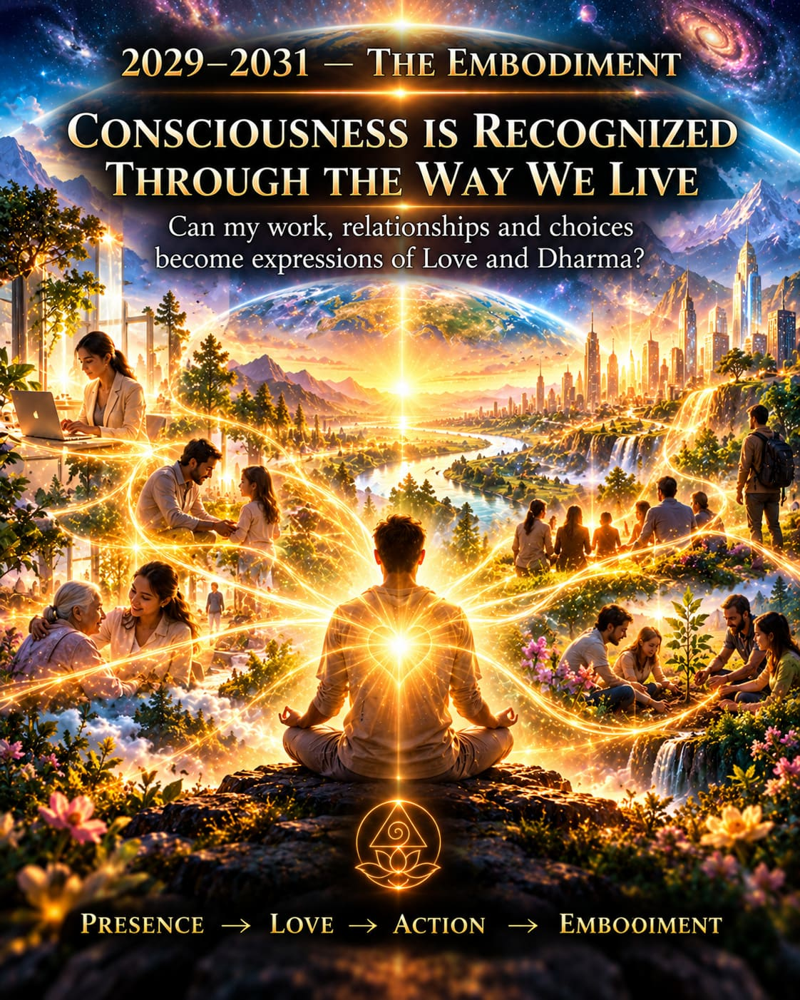

Our Mission
From Divine Recognition to Conscious Living
Consciousness Calling invites people to recognise Divine Presence within and allow that recognition to become their way of living.
Our mission is to support the movement from habitual identification toward awareness, from separation toward relationship, and from inner recognition toward Love expressed through action.
Through books, reflections, Light Codes and contemplative invitations, this work encourages the Mind to cooperate with the Heart—bringing greater discernment, compassion and responsibility into everyday life.
Within this vision, awakening unfolds through the lives we are already living: our work, families, relationships, choices and service. Each person can participate consciously, honouring their individual journey while recognising their relationship with the Whole.

The Five Living Movements express this continuing invitation:
- CONSCIOUSNESS CALLINGHEAR
- CONSCIOUSNESS REVEALINGSEE
- CONSCIOUSNESS LIVINGLIVE
- CONSCIOUSNESS EMBODIEDEXPRESS
- THE GREAT REMEMBERINGREMEMBER & SERVE
These are interconnected movements we may revisit throughout life.
Our intention is to help inner recognition find expression through human life, so that awareness becomes wisdom, Love becomes action, and remembrance becomes service.
RECOGNISE → LIVE → EMBODY → REMEMBER & SERVE
Recognise the Presence within. Let your participation become an expression of Light and Love.